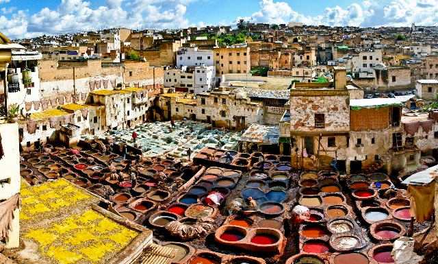
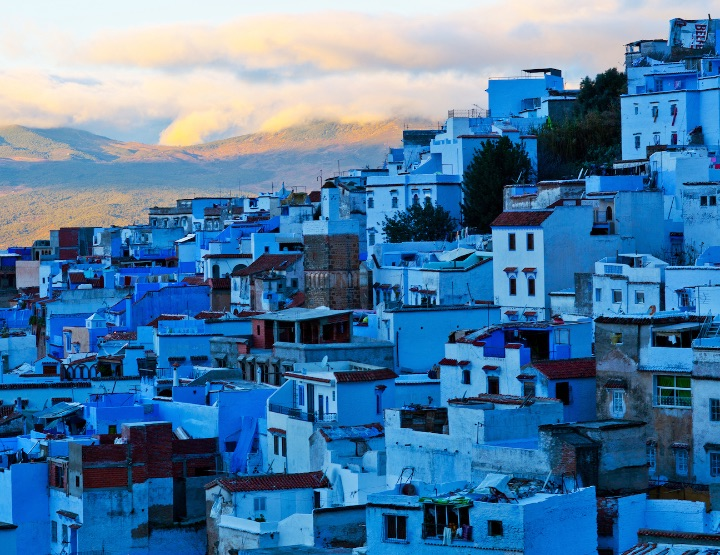
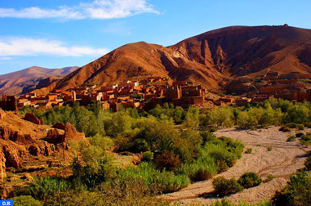
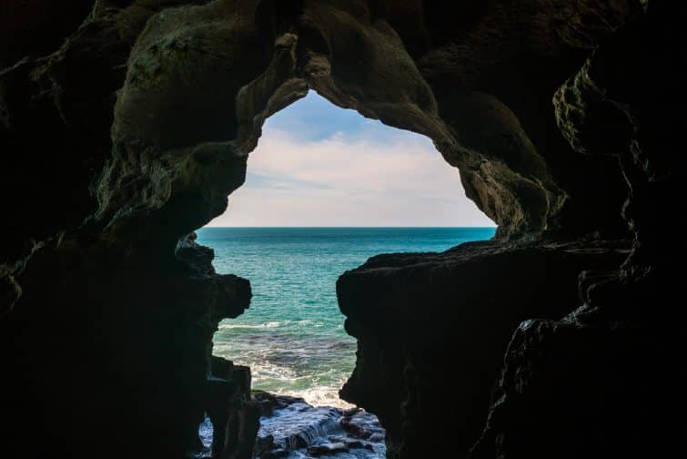
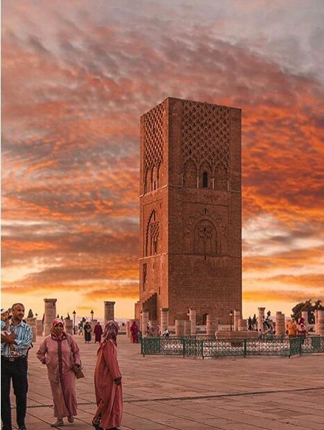

Les destinations 🛤
Ville impériale embellie par les dynasties successives, berceau de l'ex-Empire chérifien, abritant l'un des plus fascinants souks du Maroc...
 FèsPerle bleue du Maroc,Chefchaouen est une œuvre d’art en elle-même, un petit bijou accroché à un flanc de montagne, se veut aussi un modèle en matière de développement durable!
 Chefchaouen

Mondialement réputées pour la qualité de sa roche propice à l’escalade, les gorges du Todra sont pourvues de voies équipées de niveaux 5a à 8c pour des ascensions allant jusqu’à 300 mètres. Sur place , Il est possible de louer l’équipement ainsi que les services d’accompagnateurs.
Tinghir

Tanger a longtemps fait office de capitale culturelle officieuse pour un certain nombre d'écrivains et d'artistes du monde entier
Tanger

Rabat
Design your nursery
Contacts